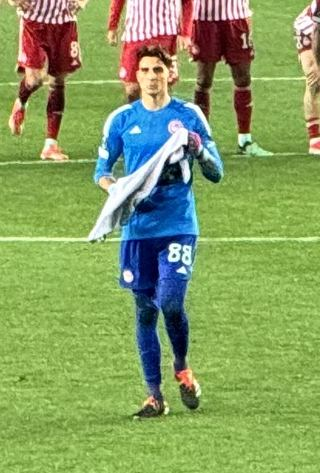

Ezzcoins › Player pages › Konstantinos Tzolakis (Team of the week)

81
GK

Tzolakis
DIV81
HAN80
KIC79
REF85
SPD58
POS80
PlayStyles
Footwork1v1 Close DownDeflectorTeam of the week
Konstantinos Tzolakis
81 GK · Hull City · Premier League ·  Greece
Greece
15,250Recent console price
81Meta rating · GK same as overall
GK81
DIV81
HAN80
KIC79
REF85
SPD58
POS80
Chemistry style
Turn on JavaScript to see this card with each chemistry style.
- Card
- Team of the week
- Added
- 30 Sep 2026
- Position
- GK
- Club
- Hull City
- League
- Premier League
- Nation
- Greece
- Skill moves
- 1★
- Weak foot
- 3★
- PlayStyles+
- None
- PlayStyles
- Footwork, 1v1 Close Down, Deflector
- Base card
- 79 GK ›
Meta rating: Ezzcoins' own estimate of how well this card plays in game, worked out from its stats for each position it can play, its skill moves, weak foot and PlayStyle+. An average card scores about its overall rating; higher means it plays above its rating.
Watch on Ezzcoins